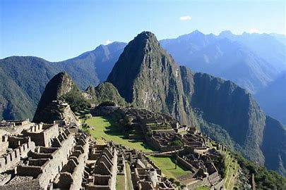

第1問 2021年現在、日本の世界遺産はUNESCOに何件登録されていますか？
A.
第2問 古代都市テオティワカンがあるのはどの国ですか？
A.
第3問 次の写真が示す世界遺産は何ですか？

A.
参考文献
- 文化庁 「日本の世界遺産一覧」
- https://www.bunka.go.jp/seisaku/bunkazai/shokai/sekai_isan/ichiran/
- 公益財団法人 日本ユネスコ協会連盟 「世界遺産について」
- https://www.unesco.or.jp/activities/isan/about-worldheritage/